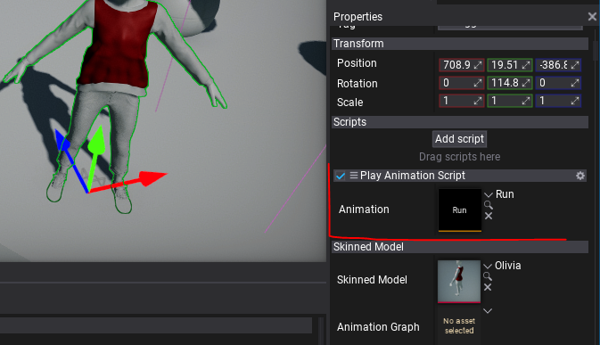

HOWTO: Play animation from code
In this tutorial, you will learn how to create a virtual Anim Graph that plays a single animation on a Skinned Model.
1. Create a script
Firstly you will need to create a new script that will create new virtual Anim Graph asset and set it to the Animated Model instance to play. Use the following example code:
public class PlayAnimationScript : Script
{
private AnimationGraph _graph;
/// <summary>
/// The animation to play.
/// </summary>
public Animation Animation;
/// <inheritdoc />
public override void OnStart()
{
var animatedModel = Actor.As<AnimatedModel>();
_graph = Content.CreateVirtualAsset<AnimationGraph>();
_graph.InitAsAnimation(animatedModel.SkinnedModel, Animation);
animatedModel.AnimationGraph = _graph;
}
/// <inheritdoc />
public override void OnDestroy()
{
// Ensure to cleanup created resources
Object.Destroy(ref _graph);
}
}
2. Add script and setup Animation
The next step is to add this script to the Animated Model on a scene that has valid Skinned Model assigned. Then assign Animation property to animation you want to play.

3. Test it out!
The final step is to test it in game. Simply press Play on toolbar or hit F5 button and see model playing animation. In case of issues open Output Log to find any warning or error messages.